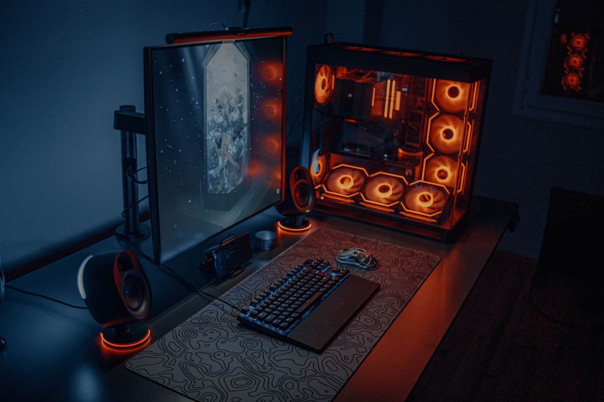
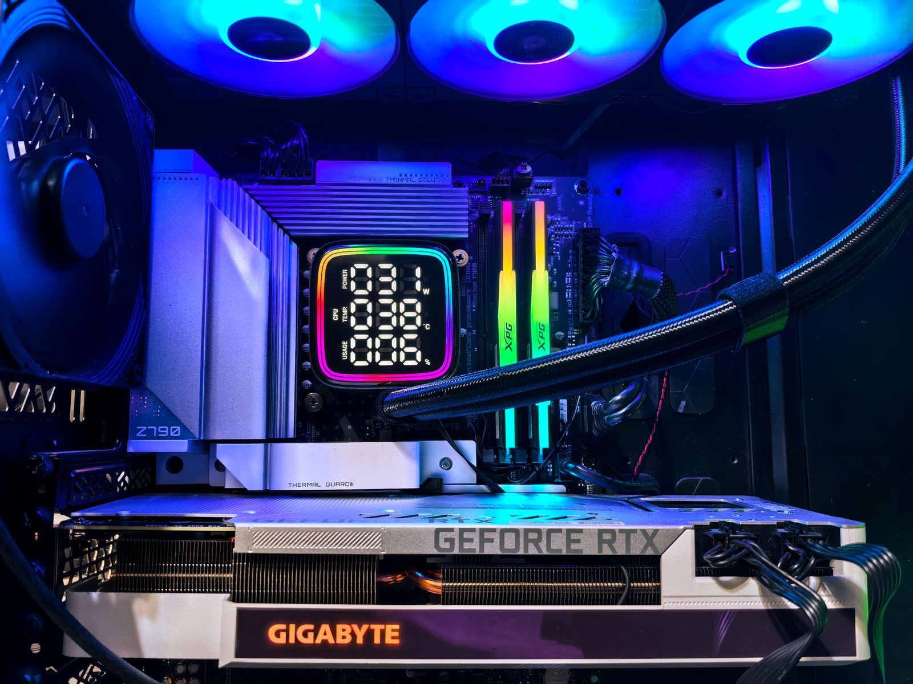
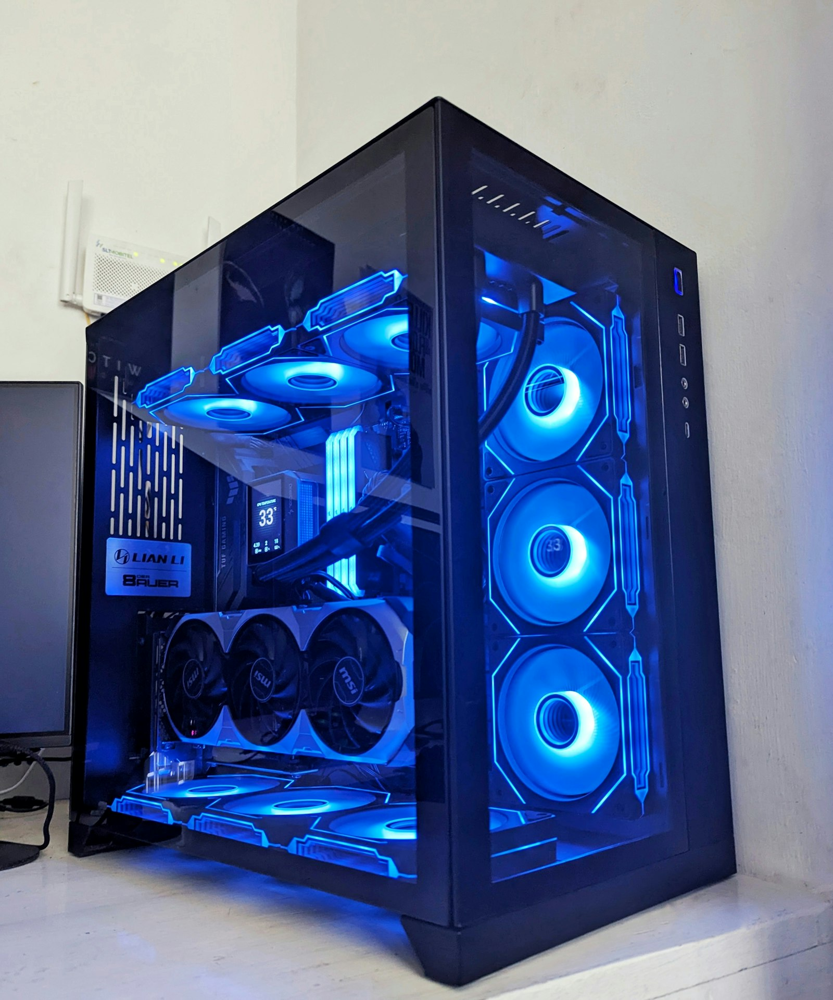
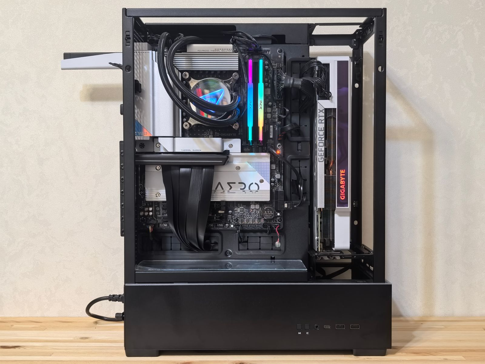

Station Ember
Escritorio limpio con PC de cristal, ventiladores naranja y monitor de alto refresh. Ideal para sesiones largas y stream.
RGB 1440p StreamingSetups gamer que dominan la noche · RGB · Alto rendimiento · Estilo cyberpunk
Desde estaciones minimalistas hasta builds full RGB listos para streaming y competición. Elige el estilo que mejor se adapte a tu forma de jugar.

Escritorio limpio con PC de cristal, ventiladores naranja y monitor de alto refresh. Ideal para sesiones largas y stream.
RGB 1440p Streaming
Vista interior con AIO digital, RAM XPG y tarjeta gráfica RTX. El corazón del setup late con colores vivos.
AIO RTX Custom
Torre Lian Li con ARGB azul intenso, cable management impecable y temperatura controlada. Estética fría y agresiva.
Lian Li ARGB Silent
Build open-frame para mostrar cada componente. Perfecto para quienes disfrutan del hardware a la vista.
Showpiece AirflowConfiguraciones orientativas según el uso. Ajusta según presupuesto y resolución objetivo.
| Componente | Competitivo 1080p | 1440p / Ultra | 4K / Content |
|---|---|---|---|
| CPU | Ryzen 5 7600 / i5-14600K | Ryzen 7 7800X3D / i7-14700K | Ryzen 9 7950X / i9-14900K |
| GPU | RTX 4060 Ti / RX 7600 | RTX 4070 Super / RX 7800 XT | RTX 4080 Super / 4090 |
| RAM | 32 GB DDR5-6000 | 32–64 GB DDR5-6000 | 64 GB DDR5-6400+ |
| Almacenamiento | 1 TB NVMe Gen4 | 2 TB NVMe Gen4 | 2–4 TB NVMe Gen4/5 |
| Refrigeración | Aire / AIO 240 | AIO 360 | AIO 360 + buen airflow |
| Fuente | 650–750 W Gold | 850 W Gold / Platinum | 1000–1200 W Platinum |
El mejor setup es el que se adapta a ti: resolución, juegos, presupuesto y espacio. Empieza por lo esencial y ve mejorando por piezas.
Volver arriba